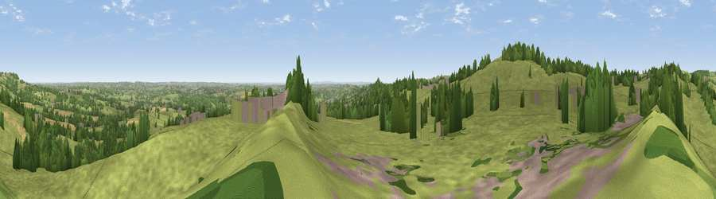

Viewpoint near Crich
#16023 in England · top 13% of its area beats it · near CrichThe view, rendered

A 360° render of this exact spot computed from the terrain model, tree cover and land cover — summer colours, afternoon light, calibrated against photographs of famous viewpoints. Real trees, hedges and buildings will differ in detail.
The panorama
Grey silhouette: terrain skyline in each direction (720 bearings, Earth curvature and refraction included). Dashed green: skyline with trees (+15 m) and buildings (+8 m) as obstacles. Blue strip: how far the ground is visible on each bearing.
Where the view opens
Wedge length = distance to the farthest visible ground on that bearing (vegetation-aware). Rings at 10, 25 and 50 km.
What fills the view
80% grassland · 13% woodland · 4% cropland · 3% built-up
Angular shares of the visible panorama (visual magnitude), not map area. Landscape diversity 0.29 (0–1 Shannon).
Key numbers
More beautiful places nearby
The staircase of upgrades: each row has a higher view potential than everything closer. Driving times are estimates from straight-line distance, calibrated against real road routing — check an actual route before setting out.
| Place | Direction | Drive | Score |
|---|---|---|---|
| Crich Stand | WSW · 1 km | ~3 min | 73.0 |
| Alport Height | SW · 6 km | ~13 min | 73.9 |
| Tissington Hill | W · 20 km | ~34 min | 75.5 |
| Viewpoint near Woodhouse Eaves | SSE · 44 km | ~64 min | 77.7 |
| Viewpoint near Mow Cop | W · 49 km | ~70 min | 78.9 |
| Viewpoint near Mow Cop | W · 49 km | ~70 min | 80.2 |
| Viewpoint near Harthill | W · 84 km | ~108 min | 80.5 |
| Viewpoint near Little Wenlock | WSW · 86 km | ~110 min | 84.2 |
53.09622, -1.47541 · source: screening · position refined by local search. Computed location — check access rights before visiting.